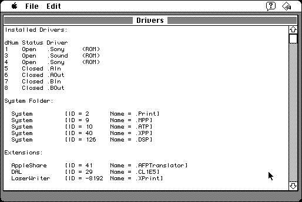

Download
Drivers_1.0.zip (25K) Drivers 1.0 repackaged into a zipped hfs disk image and checksum file. The disk image can be mounted with Mini vMac.
Drivers_1.0.hqx (45K) Drivers 1.0 in the original format.
copyright: Carl Bell
mod date: May 1, 1992
license: free for non-commercial use
from url :
Stuff I've Written
"Utility that lists installed drivers."

If you find these downloads useful, please consider helping the Gryphel Project, which hosts them.
Here are the md5 checksums for the downloads, signed with Gryphel Key 5:
--------- GRY SIGNED TEXT --------- cf57cb66b9c7570b0db6aa4cb3edb0d3 Drivers_1.0.zip a2c59048502444f0c858c3f66897e83d Drivers_1.0.hqx ------- BEGIN GRY SIGNATURE ------- Gry/4Xa8CFcUzxdN/I97wnnnpO5REDSbdIgY9aBP/OwrK6FU/v+Jvb5bch1jGV9V iVrFcr0y3kGKowf18W48x4UkixagDtXU+RbCEw+HLL3gUYEB9Wq7s4X1mlawCB9g hxRIA5BqSPu5TDspx45eKdjUFSVupV3S/MvabfKDGuwp1RnFBW2JDscbLLd3afwZ -------- END GRY SIGNATURE --------